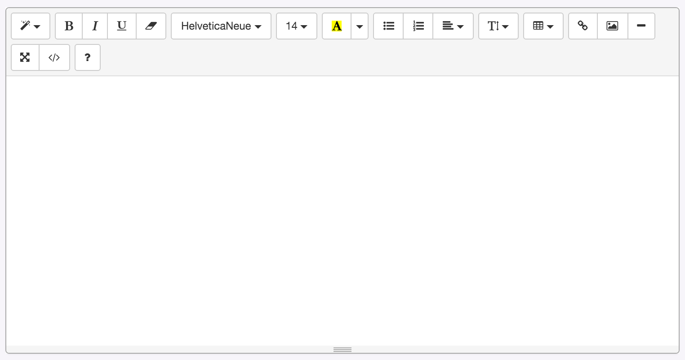

RFDP : Raccoony's Favorite Django Plugins
웹 페이지에 쓸 만한 위지윅 에디터를 찾기란 쉽지 않은데요. summernote라는 꽤 괜찮은 오픈소스 에디터를 django에 손쉽게 적용할 수 있는 django-summernote를 소개합니다.
플러그인 이름 : django-summernote
저장소 : https://github.com/summernote/django-summernote
쓰임새
summernote를 django 페이지에서 사용할 수 있습니다.

설치
pip install django-summernote
설정
INSTALLED_APPS에 django_summernote를 추가합니다.
INSTALLED_APPS += ('django_summernote', )
urls.py 파일에는 django-summernote에 대한 항목을 추가하고요.
urlpatterns = patterns('',
...
(r'^summernote/', include('django_summernote.urls')),
...
)
데이터베이스 마이그레이션을 해줍니다.
python manage.py migrate
사용법
form에 적용하려면
다음과 같이 특정 필드의 widget을 SummernoteWidget이나 SummernoteInplaceWidget으로 지정해주고,
from django_summernote.widgets import SummernoteWidget, SummernoteInplaceWidget
# Apply summernote to specific fields.
class SomeForm(forms.Form):
foo = forms.CharField(widget=SummernoteWidget()) # instead of forms.Textarea
# If you don't like <iframe>, then use inplace widget
# Or if you're using django-crispy-forms, please use this.
class AnotherForm(forms.Form):
bar = forms.CharField(widget=SummernoteInplaceWidget())
템플릿 파일에서 해당 필드를 출력할 때 safe 필터를 적용하면 됩니다.
{{ foobar|safe }}
admin 화면에 적용하고 싶다면
admin.py에 ModelAdmin에서 SummernoteModelAdmin을 상속받습니다.
from django_summernote.admin import SummernoteModelAdmin
# Apply summernote to all TextField in model.
class SomeModelAdmin(SummernoteModelAdmin): # instead of ModelAdmin
...
설정
settings.py에 몇 가지 설정을 추가할 수 있는데요. 이를테면 summernote가 보여질 모드 선택(iframe 등), 기본 언어 코드 설정, 에디터 툴바에 나타내고 싶은 아이콘 설정하기 등이 가능합니다.
자세한 사항은 django-summernote 저장소의 README를 참고하세요.